8.- LA GESTION AMBIENTAL Y LA RESPONSABILIDAD SOCIAL CORPORATIVA EN LA PEQUEÑA Y MEDIANA EMPRESA
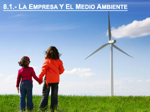
A pesar de los esfuerzos realizados en los últimos años, se puede asegurar que el incremento de la contaminación y sus efectos colaterales han ido incrementándose de forma espectacular. Por lo que se puede asegurar, que la mala gestión medioambiental es un hecho que sigue acompañando al ser humano a través de los tiempos.
El acelerado desarrollo de la humanidad y el cambio de hábitos de consumo y vida, unidos al desarrollo industrial necesario para cubrir dichos hábitos, son la causa fundamental del desequilibrio originado. Por poner un claro ejemplo de políticas contradictorias, todavía hoy en día se sigue considerando a la Tierra como un enorme vertedero con una capacidad ilimitada de almacenamiento, y numerosos países que propugnan las excelencias de sus leyes medioambientales internas a bombo y platillo, no dudan en exportar residuos peligrosos a cualquier lugar del planeta.
Aunque aun queda mucho por hacer, la nueva era de la concienciación mundial en temas medioambientales no ha hecho mas que empezar y se espera que en las próximas décadas todos seamos capaces de reaccionar y encontrar todo tipo de soluciones para que nuestro planeta recupere todo su esplendor, por el bien nuestro y de todos los seres que habitan el planeta Tierra, en aras de lograr un desarrollo sostenible.
El surgimiento de importantes problemas medioambientales, ha producido a nivel global y local:
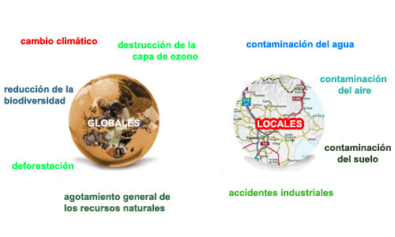
En el ámbito de empresa, la relación establecida entre el subsistema económico y el ecosistema planetario se produce sobre la base de la utilización de los recursos y energías que la empresa necesita para producir, además de plantear el problema del vertido de residuos que genera la actividad productiva, por tanto, el medioambiente debe enfocarse desde la teoría de los stakeholders, pues solo siendo conscientes, las empresas y los ciudadanos, de lo que supone la protección del entorno natural y del impacto que en éste generan se puede argumentar la solidez de la responsabilidad social corporativo.
Se abre así el debate sobre la necesidad de establecer un desarrollo sostenible.
Dentro de la sociedad, la empresa va a jugar un papel fundamental en el logro del desarrollo sostenible, ya que se constituye como el principal consumidor y transformador de los recursos del medio ambiente (el entorno natural proporciona importantes recursos naturales a las empresas, fundamentalmente para que estas puedan desarrollar su actividad), y es una fuente importante de contaminación y materiales de desecho, tanto directamente, a partir de los procesos productivos, como indirectamente, a través de sus productos (el medio ambiente actúa como sumidero de los desechos generados por la actividad empresarial: residuos, emisiones atmosféricas y vertidos).
La razón medioambiental y la necesidad empresarial de su gestión viene determinada por:
- La necesidad de las empresas en mejorar continuamente su capacidad de competir
- La creciente intensidad competitiva del mercado global de bienes y servicios
Estos dos factores lleva a actuar a las empresas desde la visión de la idea de mejora continua en el nuevo paradigma de la RSC
La importancia que está cobrando el medio ambiente y que se traduce en una serie de medidas tomadas por las empresas con el fin de implantar pautas de conducta responsables socialmente con el medioambiente, tiene su origen en una serie de presiones, tanto externas como internas por parte de los diferentes stakeholders.
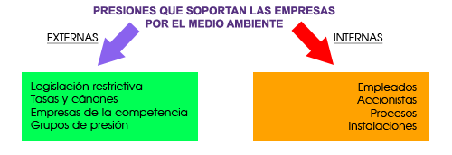
En ocasiones estas presiones de los diferentes stakeholders son la causa de acciones correctoras o preventivas que evolucionan hacia la Eco-Eficiencia:
Actualmente, las empresas con visión de futuro consideran la gestión medioambiental como una oportunidad de reducir su consumo de:
- Materias primas
- Agua
- Energía
- Corrientes residuales
Al mismo tiempo que disminuyen sus costes, aumentan su competitividad y mejoran su imagen frente a la competencia, la Administración y la sociedad en general.
La gestión competitiva empresarial tiene dos elementos angulares fundamentales: la gestión de calidad y la gestión medioambiental. En este sentido, se consideran estas áreas estratégicas como claves, y de su implantación con éxito dependerá en gran medida la excelencia de la empresa y con ello el éxito de la responsabilidad social corporativa.
Es por este motivo que nacen los Sistemas de Gestión Medioambiental como instrumentos de prevención y reducción de la contaminación. Con su aplicación, las empresas incluyen de forma natural en su sistema de gestión general todos aquellos aspectos de sus actividades que pueden generar un impacto sobre el medio.
La consideración de la empresa como un sistema abierto origina la necesidad de resaltar la importancia e influencia que el entorno tiene sobre la supervivencia y desarrollo, en un momento de cambio acelerado y permanente marcado por las turbulencias de los mercados globales. Estos cambios exigen una modificación en la forma de dirigir las empresas.
Los líderes empresariales deben tomar conciencia de la importancia de la evolución del entorno y los impactos sobre el desarrollo de su actividad, es necesario adoptar una actitud estratégica de estudio, vigilancia y adaptación permanente al entorno, como factor clave de su responsabilidad social.
El factor medioambiental supone una serie de retos y amenazas para las empresas, pero también una fuente de oportunidades y de rentabilidad.
En la medida que la empresa influye en el medio ambiente, la sociedad trata de proteger el ecosistema mediante normativas legales o entramados jurídicos de diversa índole, siendo este uno de los factores más importes de presión sobre la protección medioambiental que se ejerce a las empresas. Así, en este sentido, el principio de “quien contamina paga” se ha convertido en fuente de inspiración de redactar leyes de protección medioambiental.
La creciente presión legislativa (europea, nacional, regional y local) se acrecienta por el hecho de que su incumplimiento puede dar lugar a sanciones de responsabilidad administrativa, civil e incluso penal para las empresas.
Los efectos negativos del desarrollo económico sobre el medio ambiente vienen teniéndose en cuenta desde hace años, sin embargo, no ha sido hasta la década de los ochenta, cuando nuestras sociedades y sus gobiernos, han empezado a reaccionar, con la incorporación de unas medidas tendentes a un entendimiento equilibrado entre el medio ambiente y los procesos derivados de la actuación humana, integrando el factor medioambiental dentro de un Sistema de Gestión Empresarial, y considerándolo como un aspecto de importancia decisiva y una auténtica ventaja competitiva e responsabilidad social corporativa.
La identificación de los aspectos medioambientales y la evaluación de los efectos asociados a una actividad empresarial, es fundamental para conocer el impacto medioambiental que generan las actividades, productos o servicios, y poder establecer unos objetivos y metas medioambientales.
Los Aspectos Medioambientales son los elementos o características de una actividad, producto o servicio susceptibles de interactuar con el medio ambiente. Por otra parte, el Impacto Medioambiental es la transformación o cambio que se produce en el medio a causa de un aspecto medioambiental.
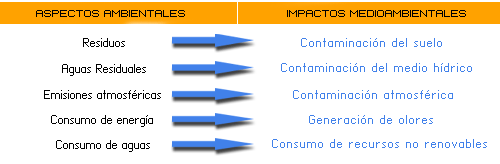
8.2.- La actitud de las empresas ante el medio ambiente
Desde estas consideraciones generales, la responsabilidad social corporativa de las empresas pasa por considerar el medioambiente como una oportunidad de negocio que permite a las empresas un posicionamiento de excelencia en su rentabilidad y beneficios generados.
La legislación cada vez más estricta y la exigencia progresiva de informar en las cuentas anuales sobre las contingencias medioambientales, además de la creciente preocupación de la sociedad por temas medioambientales, ha colocado a las empresas en una situación en la que necesitan más información de calidad para la toma de decisiones.
Así pues, poco a poco, las empresas están reconociendo que los problemas del medio ambiente y sus soluciones son demasiado importantes, tanto para ellas mismas como para la sociedad en general, y que por ello pueden tener un efecto crucial en la rentabilidad a largo plazo, y se está admitiendo que es necesario analizar y planificar, detectándose que ha llegado el momento de diseñar e implantar una estrategia ambiental.
Por todo ello, algunas empresas están comprobando que la identificación, acumulación y cuantificación del origen de los gastos medioambientales es fundamental para reducir el impacto ambiental sobre los costes totales y aumentar los resultados generales de la empresa.
Entonces, ¿cómo puede actuar una empresa para mejorar medioambientalmente y además rentabilizar sus costes medioambientales? En primer lugar la empresa debe concienciarse de que el rendimiento ambiental está incluido en el rendimiento del negocio.
Las ventajas potenciales consecuencia de la introducción de Mejoras Medioambientales pueden ser:
- Ventajas directas: cabe destacar la reducción de costes al disminuirse el tratamiento de residuos y efluentes, los consumos de energía, el uso de agua y materias primas, etc.
- Ventajas indirectas: se destaca la motivación de las plantillas, ya que la implantación de la gestión medioambiental en las PYMES puede integrarse como un elemento dinamizador de los hábitos de trabajo y como un elemento de cohesión.
A la hora de cuantificar los costes de aplicación de la nueva reglamentación en materia medioambiental, las empresas deben tener claro que la mejor forma de reducir los costes ambientales es dejando de producir residuos, ya que resulta más económico introducir mejoras en los procesos para reducir estos residuos generados, que invertir dinero en tratarlos, ya que estos costes repercuten en el precio de los productos. Por tanto resulta interesante instaurar un programa de gestión de residuos.
Las razones que mueven a las empresas a concienciarse positivamente y establecer unas pautas de conducta acordes con el medio ambiente se resumen en el siguiente gráfico:
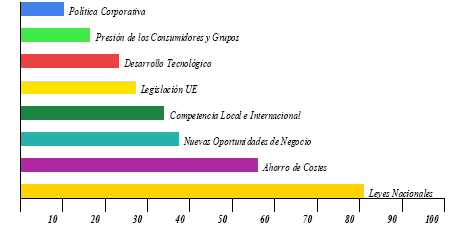
La institución empresarial por tanto, juega un papel esencial en el desarrollo sostenible y refuerza su importancia para con las generaciones futuras. Como se pone de manifiesto, la lógica de protección compatibiliza la consecución de beneficios con la prevención de la contaminación y el control, pero es necesario un cambio de cultura empresarial basada en la RSC, en tanto que la inversión de recursos (financieros, técnicos y humanos) obtienen su verdadera dimensión a medio y largo plazo, por lo que hay que cambiar la mentalidad “cortoplacista” de la gestión empresarial hacia una “actitud estratégica” de mejora continua y la búsqueda de la excelencia empresarial.
En definitiva, los sistemas de gestión medioambiental llevan implícitos dos principios que inspiran la política actual de protección integral del medio ambiente:
- El principio de control
- El principio de prevención.
De esta forma el proceso productivo prácticamente no varia, por lo que la empresa se quedaría con la misma situación en cuanto a dotación de recursos y capacidades susceptibles de generar ventajas competitivas.
Con relación a los recursos humanos la prevención supone una mayor complejidad productiva que el control, requiriéndose mayores habilidades, formación e implicación de los trabajadores de todos los niveles de la empresa, así como, una mayor coordinación interfuncional y por procesos.
En definitiva, se sabe desde hace tiempo que los asuntos medioambientales no conocen fronteras, reflejado en el carácter mundial de los principales problemas macro ecológicos descubiertos en los últimos años.
La empresa siempre tiene que adaptarse, enfrentándose constantemente al cambio de la demanda de los consumidores, de la tecnología y de la legislación. En este sentido el medio ambiente es el último cambio.
La RSC y su implicación en el medioambiente se observan desde distintas perspectivas:
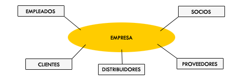
El interés por los temas medioambientales ha alcanzado a todos los estamentos de la sociedad, y la preocupación por los problemas medioambientales no queda restringida a los consumidores, abarca a todos los stakeholders. Es por todo ello, que en el marco de la teoría de los stakeholders el medioambiente puede ser visto como un problema para algunos stakeholders o como un stakeholder con identidad propia.
8.3.- Buenas prácticas medioambientales
El objeto de las Buenas Prácticas Medioambientales es reducir las pérdidas sistemáticas o accidentales de materiales y de residuos o emisiones, y de esta manera aumentar la productividad sin necesidad de recurrir a cambios en tecnología, materias primas o productos, sino centrándose principalmente en los factores humanos y organizativos de la producción.
Las áreas operativas comunes a todas las empresas que mejor se prestan a cambios en sus prácticas organizativas se centran en:
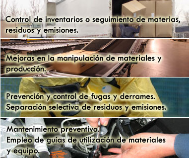
En la mayoría de los casos se trata de medidas que no requieren apenas cambios técnicos en los equipos, sino solamente en la actitud de las personas y la organización de las operaciones tras una revisión de los procedimientos existentes. Por ello las buenas prácticas pueden implantarse rápidamente, con una baja inversión, con lo que su rentabilidad suele ser alta y tienen un riesgo muy bajo.
8.4.- Herramientas previas ambientales
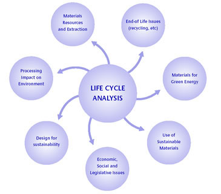El análisis del ciclo de vida, ACV, es una de las principales herramientas de gestión medioambiental, se toma como un proceso objetivo para evaluar los aspectos ambientales de un sistema producido a través de todas las fases de su ciclo de vida (desde la cuna a la sepultura).
La idea principal de la ACV es considerar que el impacto ambiental de un producto (y por tanto de una empresa que lo oferta) no sólo se produce su fabricación o producción, sino también en otras fases anteriores, como extracción de materias primas, y posterior a esa producción, transporte y distribución, consumo y uso del producto por parte del cliente, eliminación del producto al final de su vida útil.
La filosofía del ACV es que al final del ciclo de vida del producto este se pueda reutilizar o reciclar los componentes para poder fabricar otros productos.
El despegue definitivo de la ACV será debido al impulso de las instituciones de referencia de calidad.
Otra de las herramientas de gestión previas al establecimiento de un Sistema de Gestión Medioambiental, SGM, es el ecodiseño, que refiere al diseño ambiental de productos, en función de que este puede mejorar los resultados de la empresa y reducir el impacto ambiental.
El diseño ambiental de productos consiste en la incorporación criterios ambientales en la fase de la concepción y desarrollo de cada producto, tanto en las fases de producción como en las fases de consumo y de conversión de residuo.
El diseño ambiental o ecodiseño va a tener diversas utilidades para una empresa, entre las que se pueden citar las siguientes:
- Añade valor a la cartera de productos.
- Contribuye a la diferenciación del producto.
- Procura imagen de calidad.
- Da contenido a las campañas de comunicación ambiental de las empresas
- Permite el ahorro de costes a la empresa
- Evita reclamaciones de los agentes con interés en la compañía
- Permite anticiparse a la normativa legal
- Puede suponer la venta de conocimiento a terceros, convirtiéndose en una oportunidad de negocio
De otro lado se encuentra la denominada etiqueta ecológica o ecoetiqueta, que es un distintivo de carácter voluntario, que se concede a los productos que puedan demostrar un menor impacto ambiental, en las diferentes fases de vida del producto.
Estos sistemas de ecoetiquetado se rigen por normas y procedimientos simplificados de categorías de productos definidos, los cuales tienen sus criterios ecológicos o requisitos que cumplir para obtenerla, estos criterios son elaborados por expertos y se fijan en función del impacto ambiental del producto a lo largo de su ciclo de vida, la concesión es similar a la de los productos de calidad.
Por último, puede hablarse de un instrumento de acercamiento a la gestión ambiental de responsabilidad social corporativa como es la utilización del marketing verde o marketing ecológico.
La aparición del “consumidor verde” ha desarrollado un tipo de marketing orientado a satisfacer las demandas medioambientales de los consumidores más sensibilizados con la protección medioambiental, de esta forma las acciones del marketing ecológico tiene como finalidad llegar a los agentes del entorno de la organización, sociedad general, y a sus clientes en particular.
Por último, la publicación de un informe ambiental no certificado por tercera parte que comunique los resultados medioambientales de una forma comprensible supone un valor añadido para la empresa, el medio ambiente y la sociedad.
8.5.- La formulación estratégica medioambiental
Las estrategias empresariales medioambientales reflejan el grado de preocupación y compromiso con las necesidades de los clientes y su satisfacción, y con la sociedad en general, desde el ámbito de la responsabilidad social de la empresa y la apuesta por la mejora continua de sus sistemas productivos. En este sentido existen dos posibles topologías estrategias:
Por lo que respecta a la implantación estratégica medioambiental, el soporte estratégico de la empresa esta mediada, ya antes comentado, por los recursos humanos, la estructura organizativa y la cultura empresarial. La formación del personal y conseguir un alto grado de motivación e implicación en el proyecto de mejora medioambiental, va a ser fundamental a la hora de poner en práctica la estrategia adecuada, siendo imprescindible una buena organización estructural de puestos de trabajo y responsabilidades a la hora de lograrlo, además de una cultura empresarial que permita integrar a todos y a todo en la consecución de los objetivos propuestos en el sostenimiento medioambiental.
8.6.- El desarrollo sostenible y los sistemas de gestión mediambiental
El Desarrollo Sostenible, conceptualmente refiere a aquel que permite atender las necesidades de las generaciones actuales sin hipotecar el desarrollo de generaciones futuras.
Es necesario el desarrollo de sistemas de control y prevención que permitan el logro de ese desarrollo sostenible a todos los niveles. Para esto se necesita de la implantación de Sistemas de Gestión Medioambientales.
En estos momentos se puede asegurar que todo país, empresa u organización que quiera abordar con un alto grado de éxito un Sistema de Gestión Medioambiental, tiene que aunar el crecimiento de la producción con el equilibrio ecológico, más conocido como desarrollo sostenible.
La gestión medioambiental, por tanto, no es tan simple como parece, y varía obviamente dependiendo de lo que consideremos como medio ambiente.
En los últimos estándares de gestión medioambiental desarrollados, la norma ISO 14001:2004 encontramos la siguiente definición de medio ambiente:
Por consiguiente, la gestión medioambiental y su resultado deseado, son:
La empresa debe basar su gestión medioambiental en los siguientes principios generales:
- Certificar su Sistema de Gestión Medioambiental
- Disponer de una buena competencia técnica.
La Gestión Medioambiental no es un departamento más, sino una función de la Organización presente en todos los procesos y transversal a todos los departamentos. La responsabilidad sobre dicha gestión es de todos y cada uno de los miembros de la Organización.
Para hacer frente a esta necesidad de implantar sistemas de gestión medioambientales las empresas responsables deben de actuar de la siguiente forma:
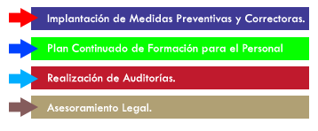
8.7.- Sistema de gestión medioambiental
Un Sistema de Gestión Medioambiental es el marco o el método de trabajo que sigue una organización con el objeto de conseguir un determinado comportamiento de acuerdo con las metas que se haya fijado y como respuesta a unas normas, unos riesgos medioambientales y unas presiones tanto sociales como financieras, económicas y competitivas en permanente cambio.
Los Sistemas de Gestión Medioambiental son herramientas que proporcionan seguridad, confianza y credibilidad en la gestión de las empresas, ya que contribuyen a prevenir y reducir el impacto ambiental, y hacen partícipes de ello a la sociedad.
Un Sistema de Gestión Medioambiental consta de dos partes:
- Una parte descriptiva del sistema.
- Una parte práctica compuesta por dos variables:
- Aspectos físicos.
- Aspectos humanos.
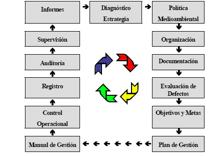
La Política Medioambiental de la empresa constituye el núcleo del SGM, ya que se trata de una declaración pública y formal por parte de la alta Dirección de una empresa sobre las intenciones y principios de acción en relación con la protección del medio ambiente.
La Dirección de la empresa debe asegurarse que la política medioambiental contempla los siguientes aspectos:
- Es adecuada para las actividades, productos o servicios ofrecidos por la empresa.
- Es conocida, comprendida, desarrollada y mantenida al día por todos los niveles de la organización.
- Es accesible a los grupos de interés.
- Está dirigida a la prevención y/o minimización de los impactos medioambientales perjudiciales y al desarrollo sostenible.
- Incluye un compromiso de cumplimiento continuo de todos los requisitos reglamentarios.
- Incluye un compromiso de mejora continua de la actuación medioambiental.
- Asume la adopción y publicación de objetivos medioambientales.
- Asume la publicación de informes medioambientales.
- Es actualizada y con una periodicidad adecuada.
Además la Política Medioambiental debe constar de los siguientes elementos:
- Se establecerá por escrito
- Se adoptará al máximo nivel
- Se revisará periódicamente.
Esta Política Medioambiental se fundamentará en las siguientes prácticas de gestión correctas:
- Se evaluarán por anticipado las repercusiones sobre el medio ambiente de todas las actividades
- Deberán prevenirse y minimizarse los efectos perjudiciales.
- Además de prever las medidas necesarias para el cumplimiento de lo regulado en la legislación existente, debe definir objetivos y compromisos destinados a la mejora continua de su operatividad desde el punto de vista medioambiental y de la responsabilidad social.
Los principales objetivos de un Sistema de Gestión Medioambiental son:
- Garantizar el cumplimiento de la legislación medioambiental.
- Fijar y promulgar las políticas y los procedimientos operativos internos necesarios para alcanzar los objetivos medioambientales de la organización empresarial.
- Identificar, interpretar, valorar y prevenir los efectos que la actividad produce sobre el medio ambiente, analizando y gestionando los riesgos en los que la organización incurre como consecuencia de aquellos.
En función de las dimensiones de la empresa, es conveniente crear un Comité de Gestión Medioambiental, un Representante de la Dirección en materia de medioambiente o en su defecto el propio gerente, que coordine las actividades del sistema de gestión medioambiental.
El éxito de la implantación de un Sistema de Gestión Medioambiental está basado fundamentalmente en tres factores:
Deberán evaluarse todos los Efectos Medioambientales que se consideren significativos para:
- Seleccionar y definir los parámetros a registrar,
- Fijar Objetivos y Metas medioambientales.
- Deberán registrarsetodos los Efectos Medioambientales que se consideren significativos.
8.8.- Las normas de gestión medioambiental
La norma ISO 14001 pertenece a la familia de normas ISO 14000, las cuales, como bloque, están orientadas a facilitar la protección ambiental, siendo solo la 14001 la única que se puede certificar.
Por tanto, se observa que un Sistema de Gestión Medioambiental (SGMA) constituye una parte importante del sistema de gestión global de una empresa que incluye la estructura organizativa, las responsabilidades, las prácticas, los procedimientos y los recursos, todo ello encaminado a elaborar, implantar y mantener una política empresarial comprometida con la mejora continua de la actuación medioambiental de la compañía.
Dicha norma ISO define un SGMA como la parte de gestión que incluye la estructura organizativa, la planificación de las actividades, las responsabilidades, las prácticas, los procedimientos, los procesos y los recursos para desarrollar, implantar, llevar a efecto, revisar y mantener al día la política medioambiental.
La norma ISO 14001:2004 es aplicable a cualquier organización, con independencia de su organización dimensión y sus actividades, que desee voluntariamente:
- Implantar, mantener al día y mejorar un sistema de gestión medioambiental.
- Asegurarse de su conformidad con su política medioambiental declarada.
- Demostrar a terceros tal conformidad.
- Procurar la certificación/registro de su sistema de gestión medioambiental por una organización externa.
- Llevar a cabo una autoevaluación y una declaración.
Por su parte, en el año 2001 se reviso el reglamento EMAS, el nuevo reglamento denominado “Reglamento CE nº 761/2001 del Parlamento Europeo y del Consejo, de 19 de marzo de 2001”, permitirá que las organizaciones se adhieran con carácter voluntario a un sistema de gestión medioambiental comunitario de gestión y auditoría medioambiental EMAS, en donde no se limita a empresas industriales, como lo hacia el de 1993, sino que acoge a todas las empresas de cualquier sector y tamaño.
El reglamento comunitario de ecogestión y ecoauditoria, define el SGMA como “aquella parte del sistema de gestión que comprende la estructura organizativa, las responsabilidades, las prácticas, los procedimientos, los procesos y los recursos para determinar y llevar a cabo la política medioambiental”.
Permite que las empresas se adhieran con carácter voluntario a un sistema comunitario de gestión y auditoria medioambientales.
Este sistema tiene como objetivo promover la mejora continua del comportamiento medioambiental de las empresas mediante:
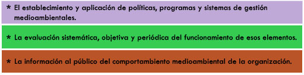
El Reglamento EMAS utiliza una definición del término Sistema de Gestión Medioambiental de forma más limitada que la ISO 14001
El reglamento EMAS se dice que es una norma más exigente que la ISO, ya que requiere realizar obligatoriamente un análisis medioambiental de sus actividades, productos y servicios de conformidad con las disposiciones del anexo VII del reglamento, y este análisis medioambiental será examinado para verificar si cumple con los requisitos, para que la empresa pueda estar incluida en el EMAS.
Entre los requisitos del Reglamento EMAS se incluye la obligatoriedad de establecer una documentación encaminada a:
- Cotejar la política, los objetivos y el programa medioambiental
- Documentar las funciones y responsabilidades fundamentales
- Describir las interacciones de los elementos del sistema
- Creación de registros, con el fin de demostrar que se está cumpliendo con el Sistema de Gestión Medioambiental y dejar constancia de que se han cumplido los objetivos medioambientales.
Los requerimientos de la ISO 14001 en este aspecto son prácticamente iguales, indicando también que la organización debe tener al día los procedimientos para conservar, identificar y eliminar los registros medioambientales.
8.9.- Auditorías medioambientales
Una Auditoría Medioambiental es un análisis del efecto que causan en el medio ambiente las actuaciones de una organización. La auditoría no proporciona respuestas, no hace más que recoger información e identificar problemas.
En la Norma ISO 14001 en relación a la NORMA 19011 queda definida la Auditoría del Sistema de Gestión Medioambiental como el proceso de verificación sistemático y documentado para obtener y evaluar objetivamente evidencias para determinar si el sistema de gestión medioambiental de una organización se ajusta a los criterios del sistema de gestión medioambiental marcados por la organización. Además los resultados de este proceso deben comunicarse a la Dirección.
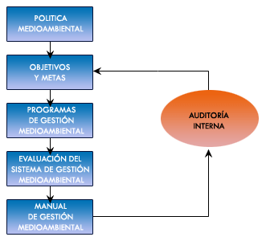
Los objetivos de una auditoría medioambiental son los siguientes:
- Identificar el estado de cumplimiento de la normativa medioambiental
- Dar seguridades a la Dirección
- Ayudar a la Dirección a mejorar la gestión
- Mejorar el nivel general de conciencia medioambiental
- Mejorar el sistema de gestión de riesgos medioambiental
Las ventajas de una auditoría medioambiental son las siguientes:
- Proporciona una base objetiva para el proceso de toma de decisiones
- Aumenta el conocimiento de los empleados acerca de las cuestiones medioambientales
- Identifica los ahorros de costes
- Incrementa la credibilidad de la empresa ante el público
- Suministra datos útiles cuando se busca un seguro de cobertura de riesgos
- Da un aviso temprano de cualquier desastre inminente
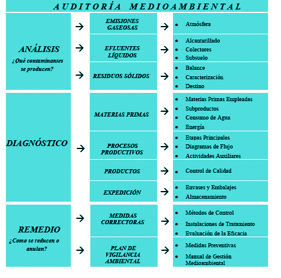
A la hora de realizar una auditoría deben tenerse en cuenta ciertos aspectos, sin olvidar que las auditorías medioambientales deben ser diseñadas según el tipo de organización y en consonancia con su política ambiental:
- Cumplimiento de la legislación
- Aspectos financieros: Ahorro de costes
- Consumidores y competencia: Etiquetas ecológicas
- Gestión de la estrategia empresarial y evaluación del SGMA
- Recursos humanos: evaluación y necesidades de formación

¡Enhorabuena! has llegado al final del Tema 8, para poder realizar la autoevaluación asegúrate de haber
revisado bien la teoría
y pulsa el botón de Marcar Tema Completado.

{kind=link}
{kind=link}